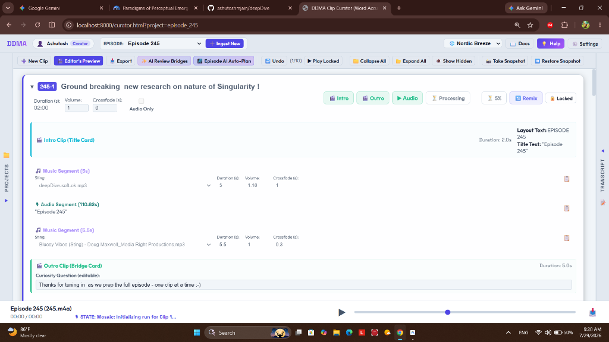

DDMA Documentation & Reference
DDMA is a progressive media production workflow designed to transform raw, unedited recordings into condensed long-form podcast audio (published on Spotify, Apple Podcasts, etc. like Episode 244), narrative-driven long-form baseline video (published on YouTube), and micro-promotional video shorts (TikTok, Reels, Shorts) to drive audience acquisition.
Quickstart with Google Antigravity (AGY)
DeepDive Media Automator is designed to run seamlessly with Google Antigravity. You don't need to manually configure virtual environments or run multi-step CLI commands.
1-Prompt AGY Setup
Open Google Antigravity in your workspace and type:
"Clone https://github.com/ashutoshmjain/ddma.git, install dependencies, start the curator server, and transcribe my audio file."
1-Click Server Start (Manual)
To launch the Curator Dashboard directly from your terminal:
python scratch/run_curator.py
This automatically opens your dashboard at: http://localhost:8000/curator.html
Curator GUI User Guide
The Curator Dashboard provides an interactive visual workspace for podcast curation:
- ➕ New Project: Upload an audio file (`.mp3` or `.m4a`) to start a project. OpenAI Whisper generates word-level timestamps in the background.
- Transcript Word Snapping: Double-click or drag-select text inside the transcript viewport to set exact sub-second start and end boundaries for clips.
- Per-Segment Sting Mixer: Add background music stings between voice segments. Customize track volume multipliers (e.g.,
0.20for subtle ducking) and crossfade durations. - 📥 Export Hub: Click the 📥 Export button in the top action bar to choose between:
- 🎧 Combined Audio (MP3): Preview and download full episode audio tracks.
- 🎬 Combined Video (MP4): Instantly demux and download full episode video compiles with 5-second question transition cards.
- 📋 Plan Metadata (JSON): View, copy, or update `plan.json`.
🎬 Clip Dynamics - Master Reference & Technical Specification
A Clip is the core functional building block of DDMA. In the progressive production workflow, raw audio recordings are converted into high-engagement short-form video clips (up to 2m 55s) while forming the baseline long-form podcast episode.

The Four-Element Construct Paradigm
Every clip is composed of exactly four structural elements:
- 🎬 Intro Card (Fixed: 1): 2s title card rendered dynamically on charcoal background with
EPISODE X • PART Ylayout. - 🎵 Music Segments (Arbitrary: N ≥ 0): Audio stings sourced from the project
music/library (e.g.deepDive-soft-ok.mp3) with duration, volume (default1.0), and crossfade. - 🎙️ Audio Segments (Arbitrary: N ≥ 1): Spoken dialogue speech tracks extracted from raw audio using OpenAI Whisper timestamps (
transcription.json). Snapped interactively via double-click. - 🌉 Outro Card (Fixed: 1): 5s curiosity question transition card rendered on black canvas with a 5.0s linear audio fade-out.
Interactive Workflows & Safety Latches
| Action / Control | Trigger | Behavior & Workflow Description |
|---|---|---|
| Transcript Boundary Snapping | Double-Click Audio Segment |
Plays range preview. If 🔓 Unlocked, auto-expands right Transcript Panel & enables word-click timestamp snapping. |
| Music Sting Preview | Double-Click Music Segment |
Plays sting audio snippet using configured duration and volume multiplier (default: 1.0). |
| Cost-Protection Latch | Toggle 🔓 Unlocked / 🔒 Locked |
External paid API triggers (🌌 Mosaic, 🤖 Remix) are disabled in unlocked state to prevent accidental charges. |
Definitive Specification File
Read the complete technical specification, JSON data contracts, and test assertion matrix at: docs/CLIP_DYNAMICS.md
CLI Commands Reference
For headless automated pipelines or terminal workflows, ddma.py exposes high-level CLI commands:
1. Transcribe Audio (`transcribe`)
python ddma.py transcribe --audio episode_244.mp3 --model tiny.en
Generates transcription.json containing word-level timestamps.
2. Generate Initial Clip Plan (`plan`)
python ddma.py plan --audio episode_244.mp3 --ranges '120-240, 300-450'
3. Slice Audio Clips (`cut`)
python ddma.py cut --audio episode_244.mp3 --plan-file plan.json --out-dir clips
4. Compile Finished Video Clip (`compile-clip`)
python ddma.py compile-clip --num 1 --plan-file projects/episode_244/plan.json
Equalizes audio/video stream durations, prepends Pillow title card intros (with Part 1 episode title exception rules), and crossfades segments.
Fast Demuxer Engine (`-c copy`)
Full episode video concatenation is powered by scratch/combine_clips_demuxer.py.
Lossless 2-Second Demuxing
Because all compiled clips and bridge question slides share standardized video parameters (740x740, 30fps, YUV420p, 48kHz AAC), FFmpeg uses -c copy stream stitching. A 40-minute episode compiles in under 4 seconds!
python scratch/combine_clips_demuxer.py --episode 244 --plan-file projects/episode_244/plan.json --out-file combined_244.mp4
Gemini AI Remix & In-Context Recasting
Clicking 🔄 Remix on any unlocked clip card recasts the target clip using Gemini AI.
- In-Context Primacy: Slices preceding locked clips (limited to the last 5 clips in reverse order) so Gemini prioritizes recent transitions while reducing token usage.
- High-Density Timeline Format: Neighborhood transcript lines are formatted as plain-text timestamps (
[start - end] text), reducing prompt token overhead by 50%. - Custom Prompt Guidelines: Customize Remix prompts in System Settings (saved to `settings.json`).
Mosaic AI Motion Graphics Ingest
Clicking 🌌 Mosaic uploads draft video clips to the Mosaic API to render AI motion graphics and visual infographics.
Self-Healing Recovery
Generated Mosaic run IDs are stored in `plan.json`. If the server restarts or browser reloads, polling threads automatically resume and retrieve completed renders.
REST API Endpoints Reference
| Endpoint | Method | Description |
|---|---|---|
/list-projects |
GET | Lists all local podcast project workspaces. |
/get-project?id=<id> |
GET | Retrieves metadata, transcript, and clip plan for a project. |
/combine-project-audio?id=<id> |
POST | Compiles all locked clips into a single MP3 audio track. |
/combine-project-video?id=<id> |
POST | Demuxes and stitches all locked clips into an MP4 video. |
/remix-clip?id=<id>&num=<num> |
POST | Recasts clip segment boundaries using Gemini AI. |